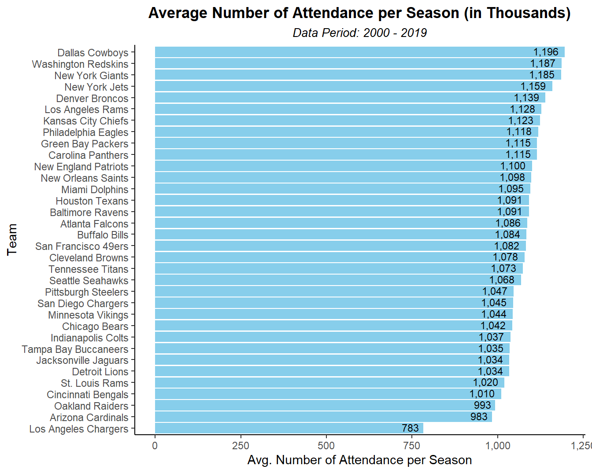
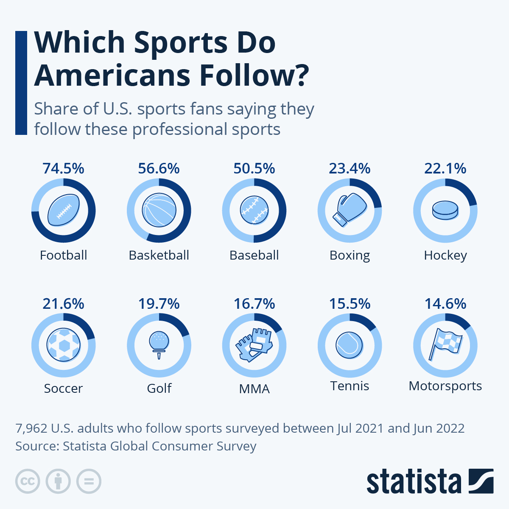
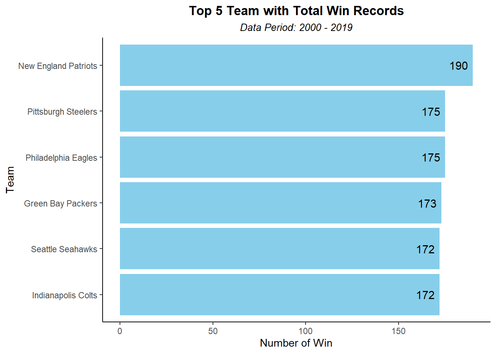
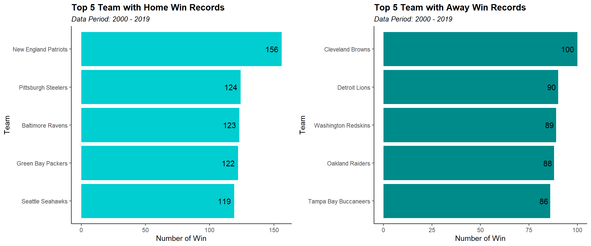

Preview
National Football League (NFL) is the premier professional American football league in the United States, consisting of 32 teams divided into two conferences and four division each. It is known for its physical gameplay, complex rules, and culminates in the Super Bowl, one of the world’s most-watched sporting events. In this blog post, I am going to show some interesting facts about NFL, which will open your new knowledge about this sport in general. It is very suitable for new fans, somebody who just want to know what is NFL, or even if you are a die-hard fans. As starter, let’s watch a video, explaining what a game of NFL would be:
Alright! now you know how the game played, from game structure, rules of the game, until scoring points. It is time to deep dive to the world of NFL!
NFL Attendance
The NFL, as one of the most popular sport in the United States, always bring a lot of people into the stadium. They are very passionate about the sports, no matter if it’s a home/away game, you would expect the stadium to reach full capacity. With all the words that I mention, you might be wondering how big is the magnitude of this sport, which shortly, I will present it to you.
Annual Attendance
First of all, let’s see the game attendance per year. The plot below shows the total number of people who attend the game in person (going to the stadium). It spread over 20 years, from 2000 until 2019.
From Figure 1, we can see the fluctuation during those 20 years, a significant increase happened from 2001 until 2006, followed by a slight decline from 2007 until 2010, continued with slight increase from 2010 until 2016, and finally it declined again until 2019. It is worth noting that during those fluctuation periods, the actual changes of attendance’s number only ranged between 32.5 million to 36 million, which mean average attendance is roughly around 34.5 million. Additionally, this is only the number of people who attended the game in the stadium, not yet accumulating those numbers from television/live streaming viewers.
Total Attendance by Team
Now, what if we breakdown the attendance numbers by calculating the average attendance per team over a 20-year period, as illustrated in the Figure 2 below?

As can be seen, the top 5 teams with most attendance are Dallas Cowboys (1,196), Washington Redskins (1,187), New York Giants (1,185), New York Jets (1,159 Million), and Denver Broncos (1,139). These numbers indicate that NFL is consistently draw large crowds, highlighting their status as a giant sports in US. It is also a testament to the sport’s sustaining popularity and deep-rooted cultural significance.
NFL vs Other Sports
After we know how big the NFL is, what if we compare it to the other sports in USA, are they really that popular? Unfortunately, I could not find any source that directly compare the total attendance between each sport in USA (at least for recent years). Instead, I will show an interesting graph that can substitute and still give relevant information.
Statista’s U.S. Sports Fan Survey

Statista’s U.S. sports fan survey was conducted to ask which professional sports do American follow. As many of 7,962 U.S. adults were questioned between July 2021 and June 2022. The result shows that football (NFL) is the most followed professional sports by U.S. adults accounted to 74.5%. This provide evidence that NFL is the most popular sport in U.S., hence there are so many people attended NFL games.
NFL Games
As a pillar of American sports, NFL has witnessed many period of thrilling competition. While playing at home offers a known advantage, my analysis will show that it does not ensure victory. We will look at each NFL team’s winning records, home and away, and shed light on the unpredictability of NFL games. We will also explore the interesting relationship between game attendance & team performance and answer whether stadium crowds correlate with winning records. This section will explore the dynamics that have shaped the league’s results over the past 20 years and reveal some interesting facts that you do not want to miss!
Home Win Percentage
I am going to show you some facts about NFL Games, especially when it comes to home games. Any team that plays at home has some advantages to help them win the game. These advantages include having more supporters, familiarity with the field, less energy expended on travel before the match, and many more. However, does the home team guarantee a win because of these advantages, or can the away team surprise by beating the home team in their own backyard? Let’s explore the facts!
The Figure 4 below shows the overall home win percentage spread across 20 years from 2000 to 2019.
It shows that the home winning percentage fluctuated a lot during 20 years, but only ranged between 52.1% to 61.4%. Especially in 2019, when most matches were held “behind closed doors” due to COVID-19, the advantages did not significantly help the home team, with only a 52.1% winning percentage. In my opinion, ths number is not significant; it is close to fifty-fifty split, implying that the away team has a high chance of securing a win. For the away team, this encourages them to put in extra effort to win the game, knowing that home advantages do not really matter. It is also worth noting that this is overall home win percentage, further breakdowns for each team may provide different results.
Regardless, this indicates that NFL is a highly competitive sport. Playing at home does not guarantee a win. There will be many surprises, high-intensity matches, and entertaining games, which make the NFL worthy of following. Dominance by certain team would make the sport boring, and surely, this is something that sports fans want to avoid.
Home/Away Win per Team
The Figure 4 graph indicates that NFL is highly competitive. How about we take a look at the competitiveness of each NFL team from their winning records? It will be interesting to see which team has the highest winning records, whether the games were played at home or away. Additionally, we can analyse whether the number of supporters correlates with the winning records.
These chart display the top 5 numbers of win recorded by NFL teams during 2000 - 2019, broken down by home and away games.

Let’s breakdown into home and away win records:

Figure 5 and Figure 6 tell us that for the past 20 years New England Patriots (NEP) has been the most successful team, recording 190 wins in total, which also happens to be the highest number of home wins with 156 victories. With these facts, NEP has been very solid at home, providing 82.1% of their wins!
On the other hand, Cleveland Browns (CB) is the most successful team at winning away from home. This stat is particularly interesting for me because when I look at the overall wins, CB does not even make it into the top 5. If we take any number of wins from this group and subtract it from CB’s away win (e.g. 190 - 100 = 90), it suggests that CB’s away wins are higher than their home wins, which is quiet unusual for any sports team, considering they usually have a higher win rate at home compared to away games.
Correlation of Attendance & Home Win
Finally, I am going to combine the information from previous sections into one analysis. I am going to show the correlation between the number of attendance and number of win. We will see together whether more supporter actually resulted in more win for the team.
Upon analysing the Figure 7, it appears that there is no clear relationship between the number of attendances and a team’s success in the NFL. Surprisingly, the team with the most wins does not have the highest attendance. This reveals that the number of attendance may not exert a significant influence on a team’s performance. There might be other factors, such as player skill, coaching strategies, or team dynamics, which play more pivotal roles in determining a team’s success in the NFL.
Summary
We have covered some interesting facts around NFL, from number of attendance, home win percentage, winning records, until the correlation of attendance and winning records. In case you miss it, here I compile the summary of our exploration:
The total attendance of NFL game per season (during 2000 - 2019) is fluctuatives, averaging around 34.5 million. See Figure 1 .
The top 5 most attended game in a season for a team are Dallas Cowboys (1.2 Million), Washington Redskins (1.187 Million), New York Giants (1.185 Million), New York Jets (1.158 Million), and Denver Broncos (1.139 Million). Refer to Figure 2 .
According to a survey by Statista, NFL is the most followed professional sports by U.S. adults accounted to 74.5%. See Figure 3 .
The overall home win percentage number is not too significant, ranging from 52.1% to 61.4% (during 2000 - 2019). The away team have almost the same percentage of winning with the home team, making the game competitive. This can be seen via Figure 4 .
The New England Patriots comes out as the most successful team in NFL, recording 190 wins over 20 years (2000 - 2019). However, Cleveland Browns has an interesting fact because they record more away win than their home win, which unlikely for any sports team. Refer to Figure 5 and Figure 6 .
There is no clear relationship between the number of attendances and a team’s success in the NFL. Surprisingly, the team with the most wins does not have the most attendance, as indicated by Figure 7 .
It was very fun to explore the NFL data and provided you those information. I really hope you find this post very insightful!
Reference
Holetzky, S. (2023, August 16th) What is the NFL? Sports and Hobbies Organization. Retrieved from https://www.sportsnhobbies.org/what-is-the-nfl.htm (visited on 02/09/2023)
Richter, F. (2022, August 29). Which sports do Americans follow? Statista Daily Data. Retrieved from https://www.statista.com/chart/28107/sports-followed-by-americans/ (visited on 04/09/2023)
The following are the R-packages used in this blog-post:
tidyverse: Wickham H, Averick M, Bryan J, Chang W, McGowan LD, François R, Grolemund G, Hayes A, Henry L, Hester J, Kuhn M, Pedersen TL, Miller E, Bache SM, Müller K, Ooms J, Robinson D, Seidel DP, Spinu V, Takahashi K, Vaughan D, Wilke C, Woo K, Yutani H (2019). “Welcome to the tidyverse.” Journal of Open Source Software, 4(43), 1686. doi:10.21105/joss.01686 https://doi.org/10.21105/joss.01686.
readr: Wickham H, Hester J, Bryan J (2023). readr: Read Rectangular Text Data. R package version 2.1.4, https://CRAN.R-project.org/package=readr.
dplyr: Wickham H, François R, Henry L, Müller K, Vaughan D (2023). dplyr: A Grammar of Data Manipulation. R package version 1.1.1, https://CRAN.R-project.org/package=dplyr.
ggplot2: H. Wickham. ggplot2: Elegant Graphics for Data Analysis. Springer-Verlag New York, 2016.
scales: Wickham H, Seidel D (2022). scales: Scale Functions for Visualization. R package version 1.2.1, https://CRAN.R-project.org/package=scales.
gridExtra: Auguie B (2017). gridExtra: Miscellaneous Functions for “Grid” Graphics. R package version 2.3, https://CRAN.R-project.org/package=gridExtra.
plotly: C. Sievert. Interactive Web-Based Data Visualization with R, plotly, and shiny. Chapman and Hall/CRC Florida, 2020.
pandoc: Dervieux C (2023). pandoc: Manage and Run Universal Converter ‘Pandoc’ from ‘R’. R package version 0.2.0, https://CRAN.R-project.org/package=pandoc.
Appendix
Data Description
The data is taken from TidyTuesday repository on the rfordatascience’s GitHub page. It actually comprises of three different datasets: attendance, games, and standings. However, for the purpose of this analysis, we will only use attendance and games datasets. The attendance dataset shows the total attendance of NFL game per week and per team, spanning multiple years from 2000 until 2019. The games dataset contains information about weekly games, providing details about the winning team and game performances. The data can be accessed from here.
Data Dictionary
attendance.csv
variable class description team character Team City team_name character Team name year integer Season year total double total attendance across 17 weeks (1 week = no game) home double Home attendance away double Away attendance week character Week number (1-17) weekly_attendance double Weekly attendance number full_name character Additional column to combine team city and team name games.csv
variable class description year integer season year, note that playoff games will still be in the previous season week character week number (1-17, plus playoffs) home_team character Home team away_team character Away team winner character Winning team tie character If a tie, the “losing” team as well day character Day of week date character Date minus year time character Time of game start pts_win double Points by winning team pts_loss double Points by losing team yds_win double Yards by winning team turnovers_win double Turnovers by winning team yds_loss double Yards by losing team turnovers_loss double Turnovers by losing team home_team_name character Home team name home_team_city character Home team city away_team_name character Away team name away_team_city character Away team city home_win integer New column created to identify whether it is a home win home_win integer New column created to identify whether it is a home win
Session Info
R version 4.3.1 (2023-06-16 ucrt)
Platform: x86_64-w64-mingw32/x64 (64-bit)
Running under: Windows 11 x64 (build 22621)
Matrix products: default
locale:
[1] LC_COLLATE=English_Australia.utf8 LC_CTYPE=English_Australia.utf8
[3] LC_MONETARY=English_Australia.utf8 LC_NUMERIC=C
[5] LC_TIME=English_Australia.utf8
time zone: Australia/Sydney
tzcode source: internal
attached base packages:
[1] stats graphics grDevices utils datasets methods base
other attached packages:
[1] pandoc_0.2.0 plotly_4.10.2 gridExtra_2.3 scales_1.2.1
[5] lubridate_1.9.2 forcats_1.0.0 stringr_1.5.0 dplyr_1.1.2
[9] purrr_1.0.2 readr_2.1.4 tidyr_1.3.0 tibble_3.2.1
[13] ggplot2_3.4.2 tidyverse_2.0.0
loaded via a namespace (and not attached):
[1] rappdirs_0.3.3 utf8_1.2.3 generics_0.1.3 stringi_1.7.12
[5] hms_1.1.3 digest_0.6.33 magrittr_2.0.3 evaluate_0.21
[9] grid_4.3.1 timechange_0.2.0 fastmap_1.1.1 jsonlite_1.8.7
[13] httr_1.4.7 fansi_1.0.4 crosstalk_1.2.0 viridisLite_0.4.2
[17] lazyeval_0.2.2 cli_3.6.1 crayon_1.5.2 rlang_1.1.1
[21] ellipsis_0.3.2 bit64_4.0.5 munsell_0.5.0 withr_2.5.0
[25] yaml_2.3.7 parallel_4.3.1 tools_4.3.1 tzdb_0.4.0
[29] colorspace_2.1-0 curl_5.0.1 vctrs_0.6.3 R6_2.5.1
[33] lifecycle_1.0.3 bit_4.0.5 fs_1.6.3 htmlwidgets_1.6.2
[37] vroom_1.6.3 pkgconfig_2.0.3 pillar_1.9.0 gtable_0.3.3
[41] glue_1.6.2 data.table_1.14.8 xfun_0.40 tidyselect_1.2.0
[45] rstudioapi_0.15.0 knitr_1.43 farver_2.1.1 htmltools_0.5.6
[49] labeling_0.4.3 rmarkdown_2.24 compiler_4.3.1